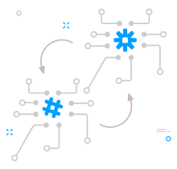
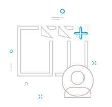
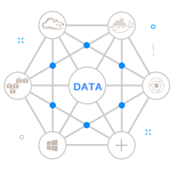

01 . 了解工业诊断云准备开始测评
02 . 用户选择测评模型按要求进行测评
03 . 查看报告了解诊断结果
04 . 专家深度调研结合诊断报告出具解决方案
THE FIRST STEP
第一步
在工业诊断云平台中，了解诊断模型的基本概念以及关于诊断模型的相关知识在平台中注册一个用户，用户整理相关测评数据，准备 开始诊断

了解模型
了解诊断模型的基本概念以及关于诊断模型的相关知识

用户入驻
您需要点击右上角的注册按钮 注册一个用户，并维护基本信息

测评准备
用户准备相关测评数据准备开始诊断
THE SECOND STEP
第二步
用户根据企业需要选择测评模型并根据测评要求进行测评
 |
||||
| 整合资源 | 选择模型图 | 开始诊断 |
THE THIRD STEP
第三步
查看测评报告，了解用户各领域能力，了解各领域的所处位置，关注各领域的短板、背后的原因、寻找提升的路径
诊断报告
占比、分析图例
企业短板
THE FORTH STEP
第四步
预约专家、深度诊断
关于诊断报告
预约专家，深入企业进行调研，并结合线上诊断报告，全面分析企业现状， 制定符合企业要求的改进方案，帮助企业实现改进目标
诊断数据
将测评企业数据、标杆企业数据以及行业数据纳入测评体系
专家意见
线上测评通过各类专业测评模型得出初步测评结果，再由专家分析测评结果，给出专业建议
诊断报告
针对短板项，专家给出针对用户专属的诊断报告，并制定改善计划